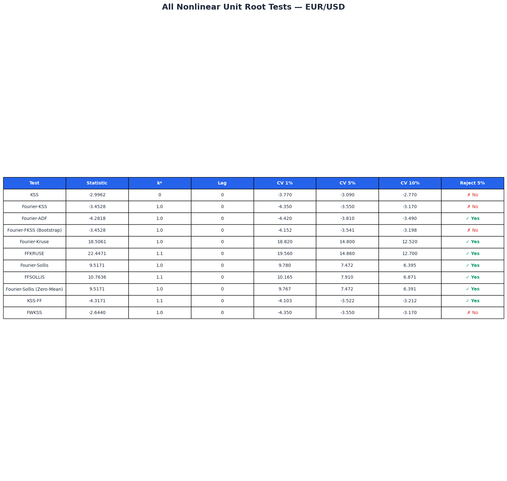
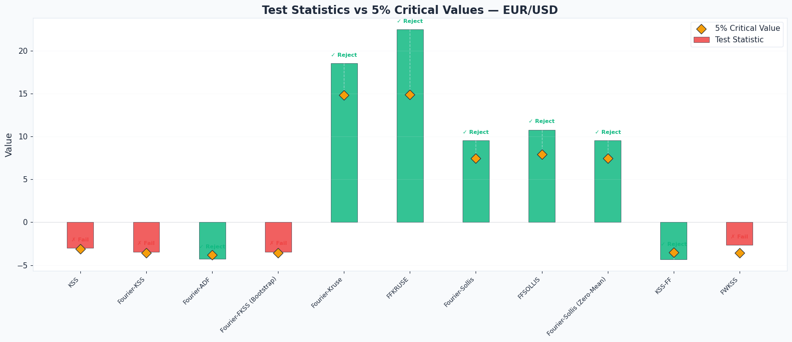
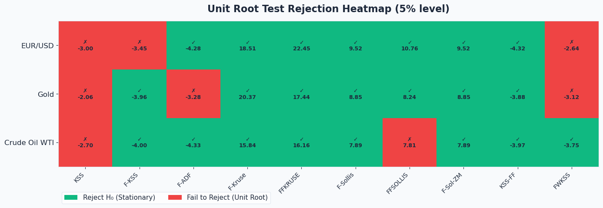
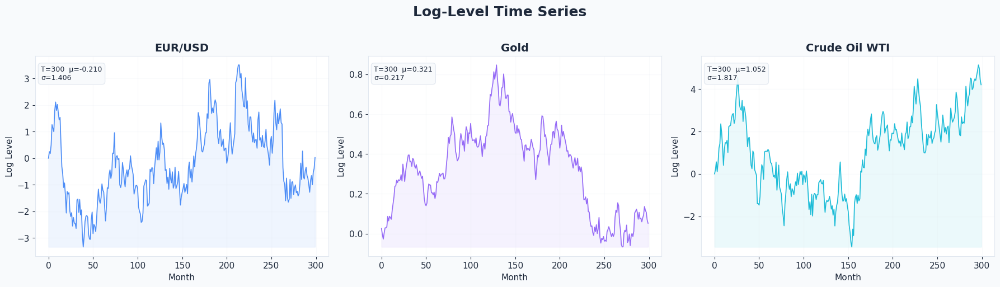
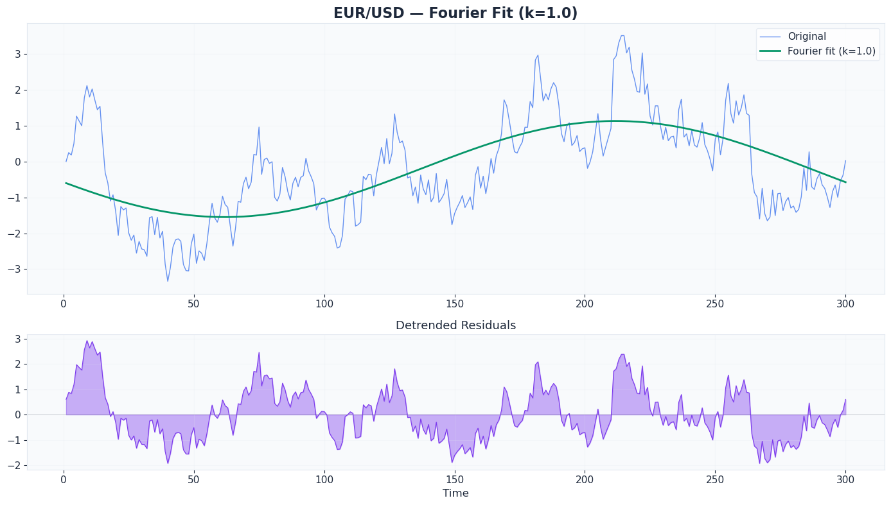
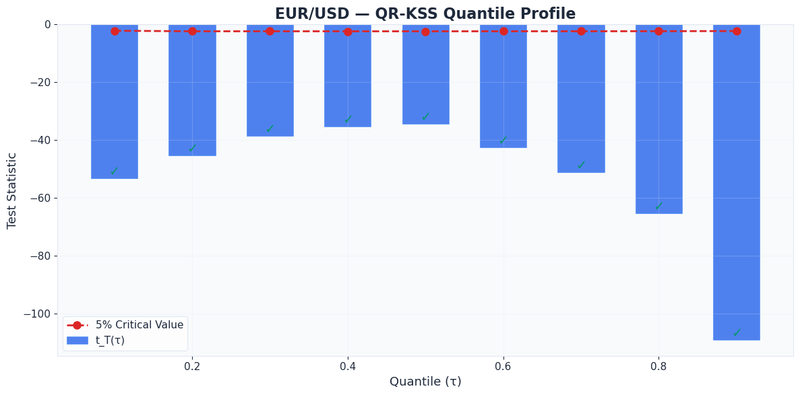
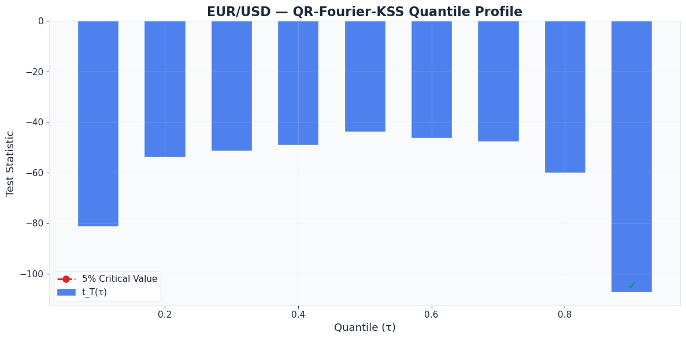

A comprehensive Python library implementing 13 nonlinear unit root tests from the frontier of time series econometrics — Fourier-based structural breaks, ESTAR/AESTAR nonlinearity, quantile regression, fractional frequencies, and wavelet preprocessing.
State-of-the-art nonlinear unit root testing, faithfully translated from published papers and verified GAUSS source code.
KSS, Kruse, and Sollis tests detect exponential smooth transition autoregressive dynamics with symmetric and asymmetric adjustment.
Capture unknown smooth structural breaks using trigonometric functions — no need to specify break dates or number of breaks a priori.
QR-KSS and QR-Fourier-KSS test for unit roots across the entire conditional distribution, robust to outliers and asymmetric shocks.
FFKRUSE, FFSOLLIS, and KSS-FF extend integer Fourier to fractional frequencies, capturing gradual structural shifts more precisely.
FWKSS applies Haar wavelet smoothing before Fourier-KSS testing, reducing noise while preserving long-run dynamics.
Sieve bootstrap generates data-specific critical values under H₀, providing exact finite-sample inference beyond asymptotic tables.
Get started in seconds with pip.
Or install from source:
Each test is faithfully translated from the original papers and verified GAUSS source code.
| # | Test | Python Function | Type | Reference |
|---|---|---|---|---|
| 1 | KSS | kss() | ESTAR t-stat | Kapetanios, Shin & Snell (2003) |
| 2 | Fourier-KSS | fourier_kss() | ESTAR t-stat | Christopoulos & León-Ledesma (2010) |
| 3 | Fourier-ADF | fourier_adf() | Linear t-stat | Enders & Lee (2012) |
| 4 | Fourier-KSS Bootstrap | fourier_kss_bootstrap() | ESTAR + bootstrap | Christopoulos & León-Ledesma (2010) |
| 5 | Fourier-Kruse | fourier_kruse() | Kruse τ-stat | Güriş (2019) |
| 6 | FFKRUSE | ffkruse() | Kruse τ-stat (FF) | Biyikli & Hepsağ (2025) |
| 7 | Fourier-Sollis | fourier_sollis() | AESTAR F-stat | Ranjbar et al. (2018) |
| 8 | FFSOLLIS | ffsollis() | AESTAR F-stat (FF) | Biyikli & Hepsağ (2025) |
| 9 | Fourier-Sollis ZM | fourier_sollis_zeromean() | AESTAR F-stat | Hepkorucu & Çınar (2021) |
| 10 | QR-KSS | qr_kss() | Quantile t-stat | Li & Park (2018) |
| 11 | QR-Fourier-KSS | qr_fourier_kss() | Quantile + Fourier | Bahmani-Oskooee et al. (2020) |
| 12 | KSS-FF | kss_ff() | ESTAR + Frac. Fourier | Omay, Corakci & Hasdemir (2021) |
| 13 | FWKSS | wavelet_kss() | Wavelet + Fourier | Haar Wavelet + Fourier-KSS |
All 13 tests applied to EUR/USD, Gold, and Crude Oil WTI daily log-returns (Yahoo Finance).
| Test | Statistic | k* | Lag | CV 1% | CV 5% | CV 10% | Reject H₀ (5%) |
|---|---|---|---|---|---|---|---|
| KSS | -2.9962 | 0 | 0 | -3.770 | -3.090 | -2.770 | ✗ |
| Fourier-KSS | -3.4528 | 1.0 | 0 | -4.350 | -3.550 | -3.170 | ✗ |
| Fourier-ADF | -4.2818 | 1.0 | 0 | -4.420 | -3.810 | -3.490 | ✓ |
| Fourier-FKSS (Bootstrap) | -3.4528 | 1.0 | 0 | -4.152 | -3.541 | -3.198 | ✗ |
| Fourier-Kruse | 18.5061 | 1.0 | 0 | 18.820 | 14.800 | 12.520 | ✓ |
| FFKRUSE | 22.4471 | 1.1 | 0 | 19.560 | 14.860 | 12.700 | ✓ |
| Fourier-Sollis | 9.5171 | 1.0 | 0 | 9.780 | 7.472 | 6.395 | ✓ |
| FFSOLLIS | 10.7636 | 1.1 | 0 | 10.165 | 7.910 | 6.871 | ✓ |
| Fourier-Sollis (Zero-Mean) | 9.5171 | 1.0 | 0 | 9.767 | 7.472 | 6.391 | ✓ |
| KSS-FF | -4.3171 | 1.1 | 0 | -4.103 | -3.522 | -3.212 | ✓ |
| FWKSS | -2.6440 | 1.0 | 0 | -4.350 | -3.550 | -3.170 | ✗ |
Note: ✓ = reject H₀ (unit root) at 5%. KSS/Fourier-KSS/ADF use left-tail t-test; Kruse/Sollis use right-tail F/τ-test.

Figure 1: Test Statistics Comparison Dashboard — All 11 standard tests on EUR/USD

Figure 2: Test Statistics vs 5% Critical Values — Bar chart comparison
All 11 standard tests across EUR/USD, Gold, and Crude Oil WTI.
| Series | Test | Stat | k* | Lag | CV 5% | Result |
|---|---|---|---|---|---|---|
| EUR/USD | KSS | -2.9962 | 0 | 0 | -3.090 | ✗ |
| EUR/USD | F-KSS | -3.4528 | 1.0 | 0 | -3.550 | ✗ |
| EUR/USD | F-ADF | -4.2818 | 1.0 | 0 | -3.810 | ✓ |
| EUR/USD | F-Kruse | 18.5061 | 1.0 | 0 | 14.800 | ✓ |
| EUR/USD | FFKRUSE | 22.4471 | 1.1 | 0 | 14.860 | ✓ |
| EUR/USD | F-Sollis | 9.5171 | 1.0 | 0 | 7.472 | ✓ |
| EUR/USD | FFSOLLIS | 10.7636 | 1.1 | 0 | 7.910 | ✓ |
| EUR/USD | F-Sol-ZM | 9.5171 | 1.0 | 0 | 7.472 | ✓ |
| EUR/USD | KSS-FF | -4.3171 | 1.1 | 0 | -3.522 | ✓ |
| EUR/USD | FWKSS | -2.6440 | 1.0 | 0 | -3.550 | ✗ |
| Gold | KSS | -2.0616 | 0 | 0 | -3.090 | ✗ |
| Gold | F-KSS | -3.9598 | 1.0 | 0 | -3.550 | ✓ |
| Gold | F-ADF | -3.2751 | 1.0 | 0 | -3.810 | ✗ |
| Gold | F-Kruse | 20.3678 | 1.0 | 0 | 14.800 | ✓ |
| Gold | FFKRUSE | 17.4392 | 0.9 | 0 | 14.860 | ✓ |
| Gold | F-Sollis | 8.8477 | 1.0 | 0 | 7.472 | ✓ |
| Gold | FFSOLLIS | 8.2378 | 0.9 | 0 | 7.910 | ✓ |
| Gold | F-Sol-ZM | 8.8477 | 1.0 | 0 | 7.472 | ✓ |
| Gold | KSS-FF | -3.8767 | 0.9 | 0 | -3.522 | ✓ |
| Gold | FWKSS | -3.1232 | 1.0 | 0 | -3.550 | ✗ |
| Crude Oil WTI | KSS | -2.7015 | 0 | 0 | -3.090 | ✗ |
| Crude Oil WTI | F-KSS | -4.0031 | 1.0 | 0 | -3.550 | ✓ |
| Crude Oil WTI | F-ADF | -4.3327 | 1.0 | 0 | -3.810 | ✓ |
| Crude Oil WTI | F-Kruse | 15.8427 | 1.0 | 0 | 14.800 | ✓ |
| Crude Oil WTI | FFKRUSE | 16.1640 | 0.9 | 0 | 14.860 | ✓ |
| Crude Oil WTI | F-Sollis | 7.8902 | 1.0 | 0 | 7.472 | ✓ |
| Crude Oil WTI | FFSOLLIS | 7.8148 | 0.9 | 0 | 7.910 | ✗ |
| Crude Oil WTI | F-Sol-ZM | 7.8902 | 1.0 | 0 | 7.472 | ✓ |
| Crude Oil WTI | KSS-FF | -3.9699 | 0.9 | 0 | -3.522 | ✓ |
| Crude Oil WTI | FWKSS | -3.7523 | 1.0 | 0 | -3.550 | ✓ |

Figure 3: Rejection Heatmap — All tests across all three financial series at 5% significance
Publication-quality plots generated by the library.

Figure 4: Financial Time Series — EUR/USD, Gold, and Crude Oil WTI daily data

Figure 5: Fourier Approximation — Optimal frequency fit capturing structural breaks in EUR/USD

Figure 6: QR-KSS Quantile Profile — Test statistics across τ ∈ {0.1, ..., 0.9}

Figure 7: QR-Fourier-KSS Quantile Profile — One-step Fourier quantile regression
Detailed output from each test on the EUR/USD exchange rate series.
ESTAR nonlinearity under demeaned/detrended series
Test Statistic: -2.9962 Model: Intercept + Trend Optimal k: 0 Optimal Lag: 0 CV 1%: -3.770 | No CV 5%: -3.090 | No CV 10%: -2.770 | Yes *
Fourier detrending + ESTAR nonlinearity
Test Statistic: -3.4528 Model: Intercept Optimal k: 1.0 Optimal Lag: 0 CV 1%: -4.350 | No CV 5%: -3.550 | No CV 10%: -3.170 | Yes * F-stat (Fourier): 123.2801 F critical (5%): 4.929
Linear ADF with Fourier structural breaks
Test Statistic: -4.2818 Model: Intercept Optimal k: 1.0 Optimal Lag: 0 CV 1%: -4.420 | No CV 5%: -3.810 | Yes * CV 10%: -3.490 | Yes * F-stat (Fourier): 123.2801 F critical (5%): 4.929
Sieve bootstrap critical values (500 replications)
Test Statistic: -3.4528 Model: Intercept Optimal k: 1.0 Optimal Lag: 0 Bootstrap CV 1%: -4.152 | No CV 5%: -3.541 | No CV 10%: -3.198 | Yes *
ESTAR with non-zero threshold c ≠ 0
Test Statistic (τ): 18.5061 Model: Intercept Optimal k: 1.0 Optimal Lag: 0 CV 1%: 18.820 | No CV 5%: 14.800 | Yes * CV 10%: 12.520 | Yes *
Fractional frequency Fourier-Kruse extension
Test Statistic (τ): 22.4471 Model: Intercept Optimal k: 1.1 Optimal Lag: 0 CV 1%: 19.560 | Yes * CV 5%: 14.860 | Yes * CV 10%: 12.700 | Yes *
AESTAR asymmetric nonlinearity + Fourier breaks
Test Statistic (F): 9.5171 Model: Intercept Optimal k: 1.0 Optimal Lag: 0 CV 1%: 9.780 | No CV 5%: 7.472 | Yes * CV 10%: 6.395 | Yes *
Fractional frequency Fourier-Sollis
Test Statistic (F): 10.7636 Model: Intercept Optimal k: 1.1 Optimal Lag: 0 CV 1%: 10.165 | Yes * CV 5%: 7.910 | Yes * CV 10%: 6.871 | Yes *
Zero-mean model for transformed series
Test Statistic (F): 9.5171 Model: Zero-Mean Optimal k: 1.0 Optimal Lag: 0 CV 1%: 9.767 | No CV 5%: 7.472 | Yes * CV 10%: 6.391 | Yes *
Quantile regression nonlinear unit root
Quantile t_T(τ) CV 5% Reject τ=0.1 -53.1977 -2.1719 Yes τ=0.2 -45.3189 -2.3574 Yes τ=0.3 -38.5869 -2.3587 Yes τ=0.5 -34.4442 -2.3716 Yes τ=0.7 -50.9785 -2.3511 Yes τ=0.9 -109.0470 -2.2763 Yes
One-step quantile regression with Fourier terms
QKS statistic: 107.194 QCM statistic: 221847.9 Bootstrap CV: computed via sieve bootstrap under H₀
Fractional Fourier function restoring Taylor expansion residuals
Test Statistic: -4.3171 Model: Intercept Optimal k: 1.1 (fractional) Optimal Lag: 0 CV 1%: -4.103 | Yes * CV 5%: -3.522 | Yes * CV 10%: -3.212 | Yes *
Wavelet denoising followed by Fourier-KSS testing
Test Statistic: -2.6440 Model: Intercept Optimal k: 1.0 Optimal Lag: 0 CV 1%: -4.350 | No CV 5%: -3.550 | No CV 10%: -3.170 | No
Published papers and GAUSS source code underlying each test.